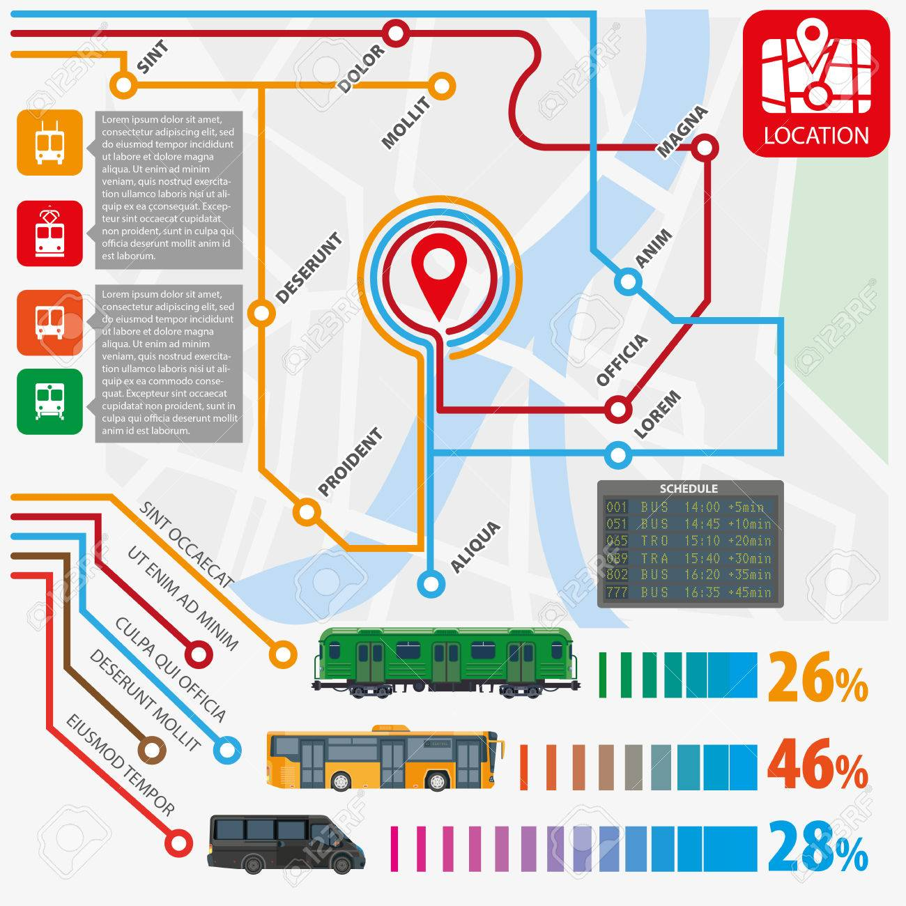

Rutas Operativas
| Ruta | Origen | Destino | Frecuencia |
|---|---|---|---|
| Ruta 1 | Terminal Norte | Terminal Sur | 10 min |
| Ruta 2 | Centro Histórico | Estación Central | 15 min |
| Ruta 3 | Estación Central | Terminal Norte | 12 min |
| Total de rutas | 3 | ||
Mapa de rutas

¿Cómo se definen las frecuencias?
Se analiza la demanda de pasajeros por hora y por zona. En horas pico se reducen los intervalos entre unidades y en horas de baja demanda se amplían para optimizar la flota.